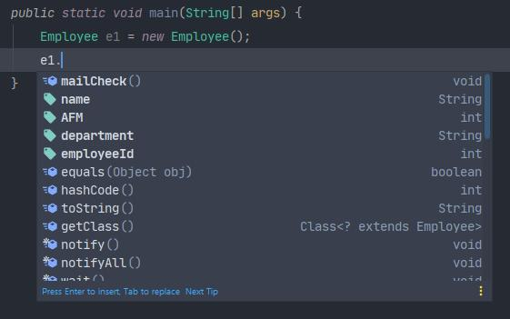
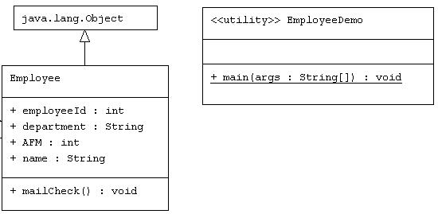
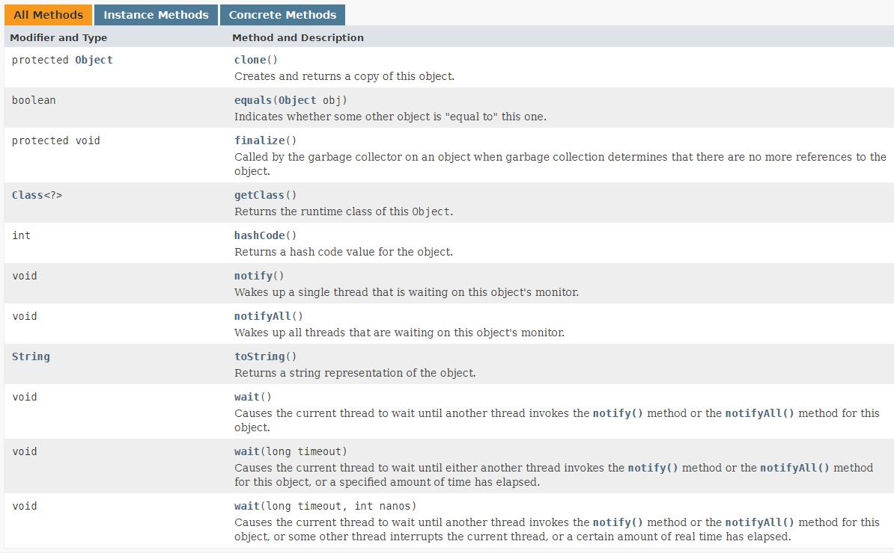
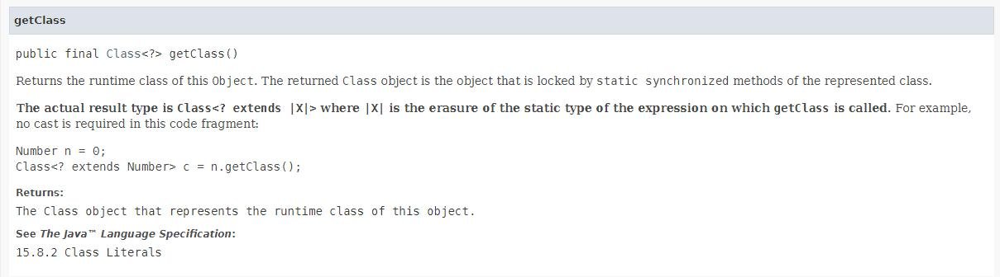
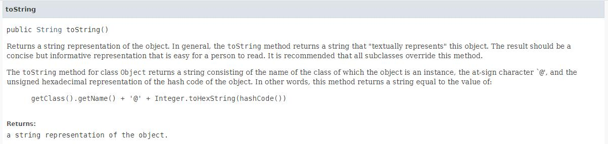

Στο σημερινό δωρεάν μάθημα Java θα αναλύσουμε τις μεθόδους που κληρονομούμε από την ίδια την Java κάθε φορά που δημιουργούμε μια καινούργια κλάση. Μέθοδοι όπως η toString( ) και η equals( ) μας δίνουν έξτρα δυνατότητες όπως καλύτερο τρόπο παρουσίασης πληροφοριών για το αντικείμενο και σύγκριση ανάμεσα σε αντικείμενα αντίστοιχα. Ας δούμε όμως την θεωρία από την αρχή και για να κατανοήσουμε καλύτερα από που προέρχονται όλες αυτές οι μέθοδοι και πως μπορούμε να τις χρησιμοποιήσουμε προς όφελος μας.
Η Java, εξ ορισμού, μας παρέχει μια κλάση το όνομα Object η οποία βρίσκεται στο java.lang.package. Όλες οι κλάσεις που ανήκουν στις βιβλιοθήκες της Java αλλά και όλες οι κλάσεις που δημιουργούμε εμείς, εξ ορισμού, έχουν άμεση σχέση με την Object class γιατί κληρονομούν τις μεθόδους της. Αυτή είναι μια διαδικασία που δεν μπορούμε να αποτρέψουμε. Στην ουσία όλες οι κλάσεις που δημιουργούμε έχουν την Object class σαν superclass λόγω της αυτόματης κληρονομικότητας που δημιουργείται. Αυτό μπορούμε να το δούμε και πιο πρακτικά με το εξής απλό παράδειγμα.
Δημιουργούμε ένα απλό project με το όνομα ObjectClass. Μέσα στο project δημιουργούμε ένα πακέτο με το όνομα com.mycompany. Μέσα στο πακέτο δημιουργούμε την κλάση Employee με τον εξής κώδικα:
Employee.java
package com.mycompany; class Employee { public String name; public int AFM; public String department; public int employeeId; public void mailCheck() { System.out.println("Mailing a check to " + this.name); } }
Τώρα δημιουργούμε μια δεύτερη κλάση που θα περιέχει την main( ) έτσι ώστε να μπορούμε να εκτελέσουμε τον κώδικα μας. Όταν δημιουργήσουμε το reference e1 και πατήσουμε την τελεία, θα εμφανιστεί η λίστα με όλες τις μεθόδους που έχει στην διάθεση του το συγκεκριμένο αντικείμενο.
EmployeeDemo.java
package com.mycompany; public class EmployeeDemo { public static void main(String[] args) { Employee e1 = new Employee(); } }
Όπως φαίνεται από την λίστα με τις μεθόδους, η equals( ), η toString( ) η ακόμα και η hashcode( ) δεν είναι μέθοδοι που έχουμε δημιουργήσει εμείς στην κλάση Employee. Αλλά προέρχονται από την Object κλάση από την οποία η Employee κληρονομεί αυτόματα. Θα μπορούσαμε να γράψουμε την Employee κλάση ως εξής και το πρόγραμμα να μας έδινε πάλι ακριβώς την ίδια λίστα με μεθόδους.
Employee.java
package com.mycompany; class Employee extends Object{ public String name; public int AFM; public String department; public int employeeId; public void mailCheck() { System.out.println("Mailing a check to " + this.name); } }
Σε ένα UML διάγραμμα η σχέση που έχει η κλάση Employee με την Object θα παρουσιαζόταν ως εξής:
Αν λοιπόν υπάρχει κληρονομικότητα ανάμεσα στις κλάσεις μας και στην Object, τότε αυτόματα υπάρχει και η έννοια του πολυμορφισμού. Αυτό σημαίνει ότι κάθε αντικείμενο που δημιουργούμε από τις δικές μας κλάσεις είναι, εξ ορισμού, και αντικείμενο είδος Object.
Ας επιβεβαιώσουμε αυτό το γεγονός χρησιμοποιώντας την ιδιότητα του πολυμορφισμού.
Employee.java
package com.mycompany; public class EmployeeDemo { public static void main(String[] args) { Object e1 = new Employee(); if (e1 instanceof Object){ System.out.println("I am an object type Object"); } Employee e2 = (Employee)e1; e2.name="Michail"; System.out.println("With casting I am back as an Employee object"); e2.mailCheck(); } }
Output
I am an object type Object With casting I am back as an Employee object Mailing a check to Michail
Στο συγκεκριμένο πρόγραμμα, δημιουργούμε ένα αντικείμενο από την κλάση Employee αλλά θέλουμε να συμπεριφέρεται σαν αντικείμενο είδος Object. Αυτό είναι εφικτό λόγω της αυτόματης κληρονομικότητας που υπάρχει ανάμεσα στην κλάση Employee και της Object. Κάνοντας χρήση της ιδιότητας του πολυμορφισμού μπορούμε να δημιουργήσουμε ένα αντικείμενο από μια κλάση αλλά να έχει ιδιότητες και χαρακτηριστικά κάποιας άλλης κλάσης η οποία είναι πιο πάνω στο δέντρο της κληρονομικότητας. Φυσικά, για να δώσουμε πίσω στο αντικείμενο μας όλες τις ιδιότητες της κλάσης Employee θα πρέπει να χρησιμοποιήσουμε casting.
Στη σύνολο τους, ο αριθμός των μεθόδων που κληρονομούμε από την Object είναι εννέα και θεωρητικά χωρίζονται σε δύο ομάδες. Σε εκείνες τις μεθόδους που δεν μπορούμε να κάνουμε override και πρέπει να τις χρησιμοποιήσουμε ακριβώς όπως είναι (getClass( ), notify( ), notifyAll( ), και wait( )) και σε εκείνες που μας επιτρέπει η Java να τις κάνουμε override και να γράψουμε δικό μας κώδικα (toString( ), equals( ), hashCode( ), clone( ) και finalize( )).
Στο επίσημο documentation της Oracle https://docs.oracle.com/javase/8/docs/api/java/lang/Object.html θα βρείτε μια γρήγορη περιγραφή της κάθε μεθόδου.
Οι μέθοδοι που θα μας απασχολήσουν σε αυτή την ενότητα είναι κυρίως αυτές που ανήκουν στην κατηγορία εκείνη όπου μπορούμε να κάνουμε override. Οι υπόλοιπες στις οποίες δεν μας επιτρέπεται να κάνουμε override, όπως η notifyAll( ), έχουν σχέση με threads για αυτό και θα αφήσουμε αυτή την θεωρία για μελλοντική ενότητα.
getClass( ) method
Μια από τις μεθόδους που κληρονομεί το αντικείμενο μας είναι η getClass( ). Αν και ανήκει στην κατηγορία εκείνη των μεθόδων που δεν μπορούμε να κάνουμε override, επειδή μας δίνει κάποιες χρήσιμες πληροφορίες και δεν έχει σχέση με τα threads, μπορούμε να την αναφέρουμε τώρα και να δούμε πως χρησιμοποιείται.
Βασικά πριν αναφερθούμε στην getClass( ) θα πρέπει πρώτα να κατανοήσουμε τι γίνεται μέσα στο JVM όταν εκτελούμε ένα πρόγραμμα.
Όπως είχαμε αναφέρει στις πρώτες ενότητες των δωρεάν μαθημάτων Java, ενώ εμείς γράφουμε τον κώδικα μας σε αρχεία με κατάληξη .java, όταν κάνουμε compile δημιουργούνται έξτρα αρχεία με την κατάληξη .class. Αυτά τα .class αρχεία είναι εκείνα που φορτώνονται στο JVM και εκτελούνται γιατί περιέχουν τον κώδικα μας κωδικοποιημένο σε binary. Τώρα, η πληροφορία που δεν γνωρίζατε μέχρι τώρα, είναι ότι εκείνος που αναλαμβάνει να φορτώσει τα .class αρχεία στο JVM είναι ένα αντικείμενο που ονομάζεται class loader. Συνήθως, σε μια μεγάλη εφαρμογή, επειδή υπάρχουν πολλά και διαφορετικά αρχεία .java, θα υπάρχουν και αντίστοιχα πολλά και διαφορετικά αρχεία .class όποτε θα χρειαστούν και πολλοί class loaders για να φορτώσουν τα αρχεία .class στο JVM. Οπότε, εν συντομία, το Runtime περιβάλλον της Java θα αναλάβει αυτόματα να χρησιμοποιήσει τους ενσωματωμένους class loaders που έχει για να φορτώσει τα .class αρχεία στο JVM και κατά συνέπεια να τα εκτελέσει.
Γιατί χρειαζόμαστε αυτή την πληροφορία? Γιατί, πολύ απλά, κάθε κλάση μας που είναι φορτωμένη στο JVM αναγνωρίζεται από τον συνδυασμό του full qualified name (δηλαδή όνομα πακέτου και κλάσης) και τον class loader. Ο class loader, για να μπορέσει να ξεχωρίζει τις κλάσεις που φορτώνει, δημιουργεί ένα αντικείμενο είδος java.lang.Class. Με άλλα λόγια, ο κώδικας που γράφεται σαν απλό αρχείο .java, μετατρέπεται σε .class και ο class loader δημιουργεί ένα αντικείμενο είδος Class για μπορεί να φορτώσει, να παρακολουθήσει, και να εκτελέσει την κλάση μέσα στο JVM. Η getClass( ) μέθοδο μας επιστρέφει ένα reference του Class αντικειμένου που έχει δημιουργηθεί μέσα στο JVM από τον Class loader.
Αυτό ακριβώς μας λέει και το documentation της Oracle για την συγκεκριμένη κλάση (https://docs.oracle.com/javase/8/docs/api/java/lang/Object.html#getClass-- ) .
Είναι πολύ πιο απλό στην χρήση από ότι ακούγεται στην θεωρία για αυτό ας γυρίσουμε πίσω στο απλό παράδειγμα μας και ας χρησιμοποιήσουμε την getClass( ) για να δούμε τι πληροφορίες μπορούμε να λάβουμε για το αντικείμενο.
EmployeeDemo.java
package com.mycompany; public class EmployeeDemo { public static void main(String[] args) { Employee e1 = new Employee(); Class e1Class = e1.getClass(); System.out.println(e1Class.getName()); System.out.println(e1Class.getSimpleName()); System.out.println(e1Class.getSuperclass()); } }
Output
com.mycompany.Employee Employee class java.lang.Object
Αφού λοιπόν δημιουργήσαμε ένα αντικείμενο είδος Employee, μετά καλέσαμε την getClass() μέθοδο που το αντικείμενο έχει κληρονομήσει από την Object. Με βάση το documentation αν καλέσουμε την getClass( ) θα λάβουμε πίσω ένα reference του αντικειμένου που έχει δημιουργήσει η Class κλάση. Οπότε η μεταβλητή e1Class είναι στην ουσία το reference της Class για την κλάση Employee μέσα στο JVM. Αυτό το καινούργιο αντικείμενο e1Class έχει αρκετές μεθόδους και πληροφορίες να μας δώσει. Μερικές από τις μεθόδους, τις οποίες καλέσαμε και στο πρόγραμμα μας, είναι η getName( ), getSimpleName( ) και getSuperclass( ). Μπορείτε να πειραματιστείτε αν επιθυμείτε με τις υπόλοιπες και να δείτε τι λαμβάνετε σαν αποτέλεσμα.
Πριν κλείσουμε την αναφορά μας στην getClass( ) θα ήθελα να αναφέρω το γεγονός ότι αν δημιουργήσετε πολλαπλά αντικείμενα από την ίδια κλάση, δεν θα δημιουργηθούν πολλαπλά Class αντικείμενα αλλά ένα αφού η κλάση από την οποία δημιουργούμε τα αντικείμενα είναι η ίδια. Ας το επιβεβαιώσουμε αυτό το γεγονός με τον εξής απλό κώδικα:
EmployeeDemo.java
package com.mycompany; public class EmployeeDemo { public static void main(String[] args) { Employee e1 = new Employee(); Class e1Class = e1.getClass(); Employee e2 = new Employee(); Class e2Class = e2.getClass(); if (e1Class==e2Class){ System.out.println("Objects are created from the same class"); }else{ System.out.println("Objects are created from different classes"); } } }
Output
Objects are created from the same class
toString( ) method
Όπως αναφέραμε στην αρχή της ενότητας υπάρχουν μέθοδοι, όπως η toString( ), στις οποίες μας επιτρέπει η Java να κάνουμε override. Ο επίσημος ορισμός της μεθόδου είναι ο εξής (https://docs.oracle.com/javase/8/docs/api/java/lang/Object.html#toString-- ) :
Ας δούμε τι ακριβώς εννοεί ο παραπάνω ορισμός της toString( ) και ποιο αποτέλεσμα ακριβώς λαμβάνουμε.
EmployeeDemo.java
package com.mycompany; public class EmployeeDemo { public static void main(String[] args) { Employee e1 = new Employee(); System.out.println(e1.toString()); System.out.println(e1); } }
Output
com.mycompany.Employee@27f674d com.mycompany.Employee@27f674d
Αυτό που λαμβάνουμε στο αποτέλεσμα είναι το full qualified όνομα της κλάσης, και μετά το @ ακολουθεί το hash code του αντικειμένου σε hexadecimal μορφή. Επίσης, αν γράψετε e1 μέσα στην println( ) αυτόματα προσθέτεται από την Java η toString( ) για αυτό και το αποτέλεσμα είναι ακριβώς το ίδιο.
Το αποτέλεσμα δεν είναι τόσο χρήσιμο όσο θα πιστεύαμε. Αυτό που το documentation ονομάζει σαν string representation θα ήταν καλύτερα αν είχε κάποια σχέση με τις μεταβλητές και τις τιμές τους. Αυτό λοιπόν, αν και δεν προσφέρεται αυτόματα από την Java, μπορούμε να το καταφέρουμε αν κάνουμε override την ίδια την μέθοδο κρατώντας το ίδιο signature της μεθόδου και απλά αλλάξουμε τον κώδικα που εκτελεί. Ας δούμε ένα ολοκληρωμένο παράδειγμα.
Employee.java
package com.mycompany; class Employee extends Object{ public String name; public int AFM; public String department; public int employeeId; public void mailCheck() { System.out.println("Mailing a check to " + this.name); } public String toString(){ String info = "Employee's name is "+ this.name +" and works at "+this.department; return info; } }
EmployeeDemo.java
package com.mycompany; public class EmployeeDemo { public static void main(String[] args) { Employee e1 = new Employee(); e1.name = "Michail"; e1.department = "Software Development"; System.out.println(e1.toString()); System.out.println(e1); } }
Output
Employee's name is Michail and works at Software Development Employee's name is Michail and works at Software Development
Τώρα, ίσως αναρωτηθείτε, γιατί πρέπει να χρησιμοποιήσετε την toString( ) και να μην γράψετε την δική σας μέθοδο. Ή μπορεί ακόμα να έχετε απορία γιατί υπάρχει η toString( ) αν χρειάζεται να την κάνετε override κάθε φορά.
Υπάρχουν αρκετοί λόγοι που υπάρχει η toString( ) αλλά ο πιο κύριος από όλους είναι ότι χρησιμοποιείται αυτόματα από την ίδια την Java. Στο παρακάτω παράδειγμα δημιουργούμε ένα String που το ένα σκέλος του είναι το String “Hello” και το άλλος σκέλος του είναι ένα αντικείμενο. Για να μπορέσει λοιπόν o compiler να ανταποκριθεί σωστά σε αυτό το concatenation των δύο πληροφοριών, χρησιμοποιεί αυτόματα την toString( ) στο αντικείμενο για να πάρει μια String πληροφορία και μετά την συνδυάζει με το “Hello”. Εννοείται, ότι για να είναι χρήσιμη η πληροφορία όταν μετατραπεί σε String θα πρέπει να κάνουμε override την toString( ) και να γράψουμε τις πληροφορίες που θέλουμε να περιέχει η String αντιπροσώπευση του αντικειμένου.
Employee.java
package com.mycompany; class Employee extends Object{ public String name; public int AFM; public String department; public int employeeId; public void mailCheck() { System.out.println("Mailing a check to " + this.name); } public String toString(){ return "new Employee. Welcome to our Department"; } }
EmployeeDemo.java
package com.mycompany; public class EmployeeDemo { public static void main(String[] args) { String str = "Hello " + new Employee(); System.out.println(str); } }
Output
Hello new Employee. Welcome to our Department
Στην επόμενη ενότητα θα ολοκληρώσουμε την αναφορά μας στην Object κλάση.